Adaptive Epistemologies and Neo-Wilds — Chapter 06
Adaptive Epistemologies and Neo-Wilds
Chapter 06
Models
A History and Treatise
Figure 06_01 Aerial photograph of 1927 Mississippi flood waters — Library of Congress
I trace the history of fluvial modeling in this chapter because it is
the history of my own methods. The physical models I have built and
worked with, at LSU, at the Harvard Graduate School of Design, at the
University of Virginia, descend directly from the institutional and
epistemological traditions established at Vicksburg, Delft, Grenoble,
and Chatou over the past 150 years. They share a material logic, water
moves over constructed terrain, sediment self-organizes according to
flow velocity, and the behavior of the model is observed, measured, and
used to inform propositions about landscapes at larger scales. What
departs is the purpose. The modeling cultures documented here were built
to predict and control, to make rivers behave as their models said they
should. The work I do with physical models is built to discover what
cannot be predicted, to encounter, through material engagement with
dynamic systems at experimental scale, principles of interaction that no
pre-programmed model could have specified in advance. This chapter tells
the story of the tradition I inherit and the point at which I depart
from it.
Rivers, Models, and
the Problem of Prediction
Fluvial geomorphology, the study of how water sculpts and reorganizes
the Earth’s surface, is the primary methodology for engineers, planners,
and designers to understand rivers as dynamic systems (Oxford
Bibliographies 2025). The term fluvial, from the Latin fluvius (river),
has been in use since the fourteenth century, but the idea that rivers
could be reliably modeled through abstraction, scaling, and simulation
to predict behavior, is a recent development that has emerged over the
past 150 years.
Fluvial modeling has never been a purely scientific project as it is
coupled to socio-technical imperatives of flood protection, stabilizing
navigation corridors, generating energy, and meeting environmental
regulations. The Seine, Mississippi, and Rhine are not just large
rivers. They are infrastructural backbones whose behavior has been
repeatedly problematized, analyzed, and re-made through models.
Historical floods on the Mississippi, the long urbanization of the Seine
basin, and the intensive engineering of the Rhine as a pan-European
trade route each produced characteristic modeling cultures and
institutional ecologies.
The term fluvial modeling has shifted over time. Early models
consisted of conceptual descriptions and empirical rules drawn from
field observation. By the mid-twentieth century, large physical,
hydraulic models, concrete landscapes with controlled inflows that
produce varying roughness coefficients, became emblematic of a
historical experimental ethos. Today, numerical models based on the
St. Venant and shallow water equations, landscape evolution models, and
even deep learning architectures are standard tools for forecasting
flood risk, sediment transport, and water quality (Saint-Venant 1871;
EOLSS 2002; Coulthard et al. 2002; Tucker and Hancock 2010; Janbain et
al. 2023).
This chapter traces that trajectory with a particular focus on three
cases, the Mississippi, the Seine, and the Rhine, and on the
institutions that became engines of modeling innovation including
Sogreah/Artelia in Grenoble, the U.S. Army Corps of Engineers’ at the
Hydrologic Engineering Center (HEC), Delft Hydraulics/Deltares in the
Netherlands, and EDF’s Laboratoire National d’Hydraulique at Chatou. It
also foregrounds an important methodological shift that moves from
fieldwork to the laboratory to the digital.
From
Descriptive Rivers to Quantitative Fluvial Science
Until the mid-twentieth century, river science was primarily
descriptive, cataloguing form and inferring history rather than
predicting change. The quantitative revolution in fluvial geomorphology
started in the 1950s and marked a decisive break. Luna Leopold, M.
Gordon Wolman, and John Miller’s Fluvial Processes in Geomorphology
(1964), synthesized hydraulic theory, systematic field measurements, and
laboratory experiments into a process-based framework for understanding
channel form and adjustment (Leopold, Wolman, and Miller 1964; Leopold
2010; Wolman 2010).
Leopold’s work on hydraulic geometry linked channel width, depth, and
velocity to discharge through power law relationships, creating an
elegant expression of how channels adjust to flow regimes (Leopold,
Wolman, and Miller 1964). Wolman’s research on floodplain construction,
sediment transport, and the geomorphic significance of floods of
different magnitudes reframed rivers as systems defined by stochastic
events and thresholds rather than equilibrium (Wolman 2010; Church
2004). In tandem, this research repositioned rivers as dynamic,
self-adjusting systems governed by measurable processes.
This quantitative turn was more than academic refinement as without
physically grounded, process-based descriptions, scaled physical models
and numerical schemes would have lacked legitimacy. The shift from
narrative description to measurable, testable processes enabled the
emergence of large hydraulic laboratories and computational modeling
frameworks. It reframed rivers as systems whose future states could, at
least partially, be predicted.
Principles of Hydraulic
Similitude
Physical hydraulic models rest on the idea that a smaller, controlled
system can reproduce the essential behavior of a larger river or
structure if key dimensionless parameters are preserved. Froude and
Reynolds numbers, geometric scale ratios, and roughness scaling are
manipulated to ensure that gravity, inertia, and viscous forces are
represented appropriately (Utah Water Research Laboratory 2025). In
practice, perfect similitude is rarely achievable as the properties of
water do not scale, and processes such as sediment transport, vegetation
drag, or air entrainment often cannot be represented faithfully at
reduced scale. Nonetheless, physical models became indispensable for
visualizing three-dimensional flow fields, testing hydraulic structures,
and communicating complex phenomena to non-specialists.
From the 1920s onward, national laboratories emerged whose remit was
deeply tied to existential infrastructural projects. Delft Hydraulics
(Waterloopkundig Laboratorium) was founded in 1927 in direct response to
the Zuiderzee Works and the design challenges of the Afsluitdijk dam and
causeway. By the early 1950s it was operating the large outdoor “de
Voorst” facility for estuary-scale models of the Delta Works and major
navigation junctions (Waterloopkundig Laboratorium 2025). In France,
hydraulic laboratories in Toulouse and Grenoble were closely tied to
hydropower development, focusing on turbines, penstocks, and the
principles of similitude (IMFT 2025; Artelia Laboratory 2025). EDF’s LNH
at Chatou, established in 1946, extended this tradition with large
hydraulic models and wind tunnels for river, coastal, and energy-related
hydraulics (EDF Lab Chatou 2022).
Physical models thus arose not as neutral scientific instruments but
as techno-political devices for making extremely large infrastructural
projects thinkable, testable, and publicly legible.
Modeling Laboratories
The
Mississippi River Basin Model (MRBM): Field to the Lab
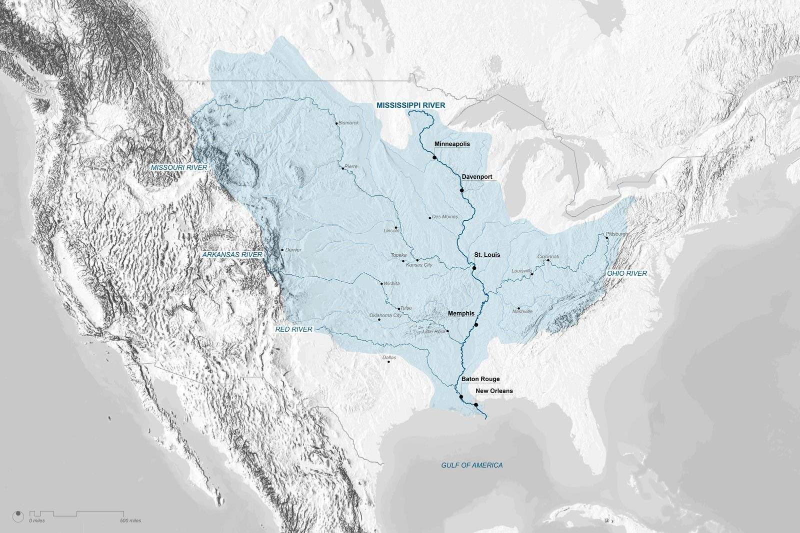
Figure 06_02Map of Mississippi River Watershed | Bradley Cantrell, Madhura Vaze
“The model has the appearance of a gigantic relief map with the streams and floodplains molded in concrete in their correct geographic locations.”
U.S. Army Corps of Engineers, History and Description of the Mississippi Basin Model (1971)
Figure 06_03Mississippi River Basin Model, Ohio River Section | U.S. Army Corps of Engineers
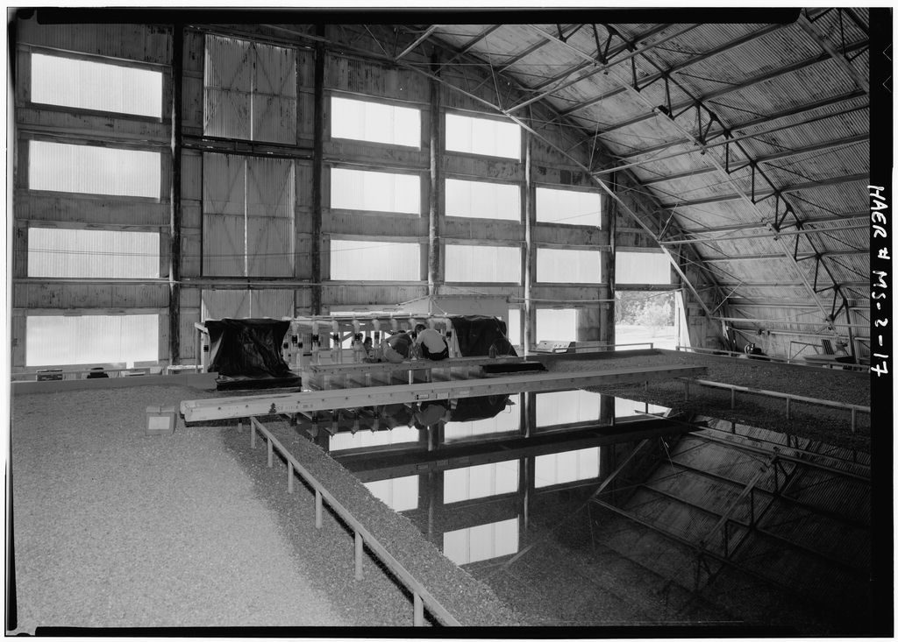
Figure 06_04Mississippi River Basin Model, engineers examining model | U.S. Army Corps of Engineers
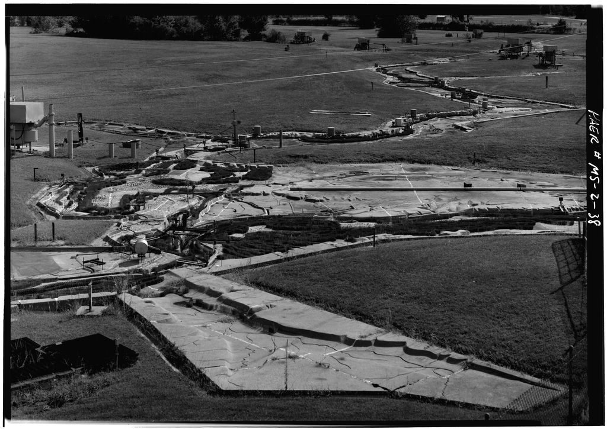
Figure 06_05Mississippi River Basin Model, Tower View Upstream | United States Army Corps of Engineers, Library of Congress
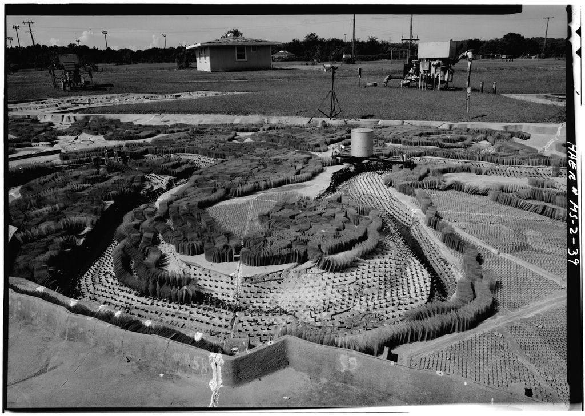
Figure 06_06Mississippi River Basin Model, Tower View Downstream | United States Army Corps of Engineers, Library of Congress
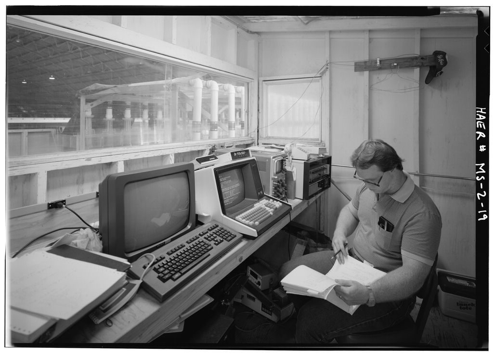
Figure 06_07Mississippi River Basin Model, Panel and Computer Room | U.S. Army Corps of Engineers
The Mississippi River Basin Model condensed several decades of
argument inside the Corps of Engineers over what counted as valid
knowledge of rivers. Until the late 1920s, river regulation within the
Corps was understood primarily as fieldwork with long apprenticeships on
levees and revetments, a slow accretion of practical experience, and a
dense mesh of local relationships along the banks of the Mississippi and
its tributaries (Robinson 1992; O’Neill 2006). In this field-based
epistemology, survey parties, levee inspectors, and district engineers
accumulated knowledge through daily and seasonal encounters with the
river by tracking water levels, bank failures, sand boils, and the
behavior of particular reaches over time. This practice was intensely
localized where district offices cultivated ongoing relationships with
planners, town officials, levee boards, and port authorities with flood
management emerging from negotiation and habit rather than calculation
(Shallat 1994; O’Neill 2006).
When proposals surfaced in the 1920s for a national hydraulic
laboratory that would investigate rivers through scale models, many
senior officers treated them as a direct threat to this culture of
expertise from embodied experience. The conflict appears in a 1926
statement by Secretary of War Dwight W. Davis, drafted in consultation
with senior Corps staff. Davis wrote that “the art of river regulation
and control has heretofore been developed principally by practical
experience in the solution of problems on a large scale” and that field
experience “is undoubtedly of much greater value than laboratory
experiments could possibly be,” since “the application of principles
evolved in the laboratory to the solution of practical problems in the
field must be difficult and uncertain” (Davis 1926, quoted in Robinson
1992, 278-79). A year later, Chief of Engineers Edgar Jadwin reiterated
that problems such as Mississippi flood control “cannot be solved in a
laboratory” (Robinson 1992, 278). Models were viewed, at best as
didactic toys, at worst distractions from real engineering.
Even as this resistance hardened inside the Corps, a counter-movement
was gathering momentum. Civil engineer John R. Freeman, who had toured
European hydraulic laboratories in Dresden, Karlsruhe, and Delft was
convinced that American rivers required comparable experimental
infrastructure (Sánchez-Dorado 2019). In 1925 he endowed a traveling
fellowship through the American Society of Civil Engineers so that young
American engineers could study abroad, and he lobbied for a national
hydraulic laboratory under the Bureau of Standards with strong support
from Secretary of Commerce Herbert Hoover and several professional
societies (Robinson 1992; Sánchez-Dorado 2019). The initial proposal
sited the laboratory in Washington, D.C., but Jadwin countered in
Congressional testimony that any such facility should be located on the
Mississippi, where it could directly serve river work. The political
debate over location and control set the stage for a compromise that
would bind laboratory modeling tightly to the Mississippi River and
Tributaries Project.
The Great Mississippi Flood of 1927 turned this unresolved epistemic
dispute into an urgent institutional problem. The catastrophe exposed
the limitations of a patchwork levee system coordinated largely through
local field offices and revealed the need for basin-scale planning
(Shallat 1994; O’Neill 2006). The Flood Control Act of 1928 not only
authorized a comprehensive Mississippi River and Tributaries (MR&T)
program, it also included explicit support for a federal hydraulic
laboratory dedicated to the river system (Robinson 1992). In 1929 the
Corps formally established the Waterways Experiment Station (WES) at
Vicksburg, Mississippi, as its principal hydraulics research facility.
Land on Durden Creek was acquired in 1930, making WES the first federal
hydraulics research station in the United States (Cotton 1979; Fatherree
2004).
Herbert D. Vogel, a German-trained hydraulic engineer, became the
first director of WES. Early work was improvised and intensely
experimental. The first Illinois River model was famously carved into
the ground with a grapefruit knife but Vogel and his staff rapidly
professionalized the operation, moving from crude earth cuts to
carefully instrumented concrete flumes and fixed-bed models (Vogel 1961,
quoted in Fatherree 2004, 11-13). New Deal public works and the
expanding MR&T program funded projects and poured resources into
Vicksburg, and by the late 1930s WES was conducting research for every
Corps division on dams, spillways, navigation channels, and coastal
structures (Cotton 1979; Fatherree 2004). The laboratory had become a
central node in a new regime of hydraulic knowledge, still grounded in
river hydraulics, but increasingly mediated through carefully scaled
channels in concrete halls.
It was within this newly consolidated laboratory culture that the
Mississippi River Basin Model was conceived (ASCE 2025). In 1943, Chief
of Engineers Eugene Reybold proposed an unprecedented, integrated
physical model that would encompass virtually the entire Mississippi
River basin (Robinson 1992). Construction began near Clinton,
Mississippi, in 1947. Built largely by German and Italian prisoners of
war during World War II and completed by civilian crews after 1946, the
model ultimately occupied about 200 acres and replicated roughly 15,000
miles of river channels and tributaries representing around 41 percent
of the land area of the contiguous United States (Robinson 1992;
Cheramie 2011). Technically, the MRBM embodied the state of hydraulic
similitude practice at mid-century, using a horizontal scale of 1:2,000
and a vertical scale of 1:100, an intentional distortion that amplified
relief and reduced the effect of surface tension in the shallow model
flows (USACE 1970; Cheramie 2011).
The basin surface was cast as modular concrete panels shaped from
surveyed topography to reproduce the main stem, major tributaries,
floodplains, and key infrastructural elements. Surface frictions were
simulated through embedded metal plugs and wire mesh to represent
different land covers and vegetation densities. A network of
watchtowers, gauges, and control buildings allowed engineers to
manipulate inflows, reservoir releases, and storm hydrographs in real
time (Robinson 1992; Fatherree 2004). A system of pumps and sumps
recirculated water, enabling events that spanned weeks or months in the
river to be compressed into hours or days in the model.
As a practical engineering tool, the MRBM quickly justified its
enormous cost and complexity. Portions of the model were operational by
1949 and during the April 1952 Missouri River flood, rapid simulations
on the basin model provided critical forecasts that guided levee raises
and evacuations, later credited with preventing substantial damages
(Robinson 1992, 291-92). Over the following decades the model was used
to test the effects of proposed reservoirs, levee alignments, cut-offs,
and bank stabilization works, as well as to reproduce and analyze
historic floods. For engineers such as Margaret Petersen, who worked at
WES in the late 1940s, the model offered an irreplaceable means to
experiment with complex interactions by tangibly changing levee heights,
roughness, or dam operations one variable at a time in a way that
isolated effects in a system as intricate as the Mississippi River
(Petersen 1997, Sánchez-Dorado 2019, 138).
Yet the model’s significance exceeded its technical performance.
Kristi Cheramie argues that from the elevated watchtowers at Clinton,
for the first time it was possible to comprehend the Mississippi
watershed as a single visual and operational field ,“the entire drainage
basin all at once,” complete with the chain reactions set in motion by
local interventions far upstream (Cheramie 2011). The MRBM turned the
river system into a manipulable, concrete terrain where hydrologists,
officers, and visiting politicians could see the consequences of an
upstream cut-off, a new dam, or a raised levee propagated across
hundreds of miles in accelerated time. In practice, the abstraction of
the watershed to a controllable model created a new design space, the
basin as laboratory.
This re-centering of authority had profound political and epistemic
effects. The MRBM became the de facto arbitration space for large-scale
flood control strategies, rather than field officers debating local
knowledge against district or division plans, levee boards and elected
officials increasingly traveled to Clinton to watch their proposals run
on the model and to witness the Corps’ prescribed scenarios (Cheramie
2011; Robinson 1992). Over time, a feedback loop emerged, and the
Mississippi River was expected to conform to the well-behaved hydraulics
of its scaled counterpart where design interventions were tuned until
the model displayed an acceptably stable, navigable, and safe river.
Measured against the Corps’ mandate to guard the protection of human
settlements and the maintenance of navigation, this shift from
field-based empiricism to laboratory modeling yielded spectacular
results. WES and the MRBM enabled a coordinated, basin-wide approach
that could test configurations impossible to prototype in situ,
substantially enhancing the capacity to standardize levee heights,
regulate reservoirs, and reduce overt flood risk (Fatherree 2004;
O’Neill 2006). At the same time, heterogeneity across the watershed was
lost with local observational practices and community knowledge that had
previously shaped flood response subordinated to model outputs. The
river’s diverse ecologies, the wetlands, backswamps, seasonal floodplain
forests, were recoded in the model as roughness coefficients and storage
volumes, reinforcing thereby a narrow performance metric that focused on
navigation and property protection (Shallat 1994; O’Neill 2006).
In design terms, the MRBM created a new, synoptic, and an
experimentally rich way of thinking of the river as a continuous
infrastructure, a “fully designed river” (O’Neill 2006). But this
affordance also naturalized a techno-bureaucratic vision in which the
messy, contingent, and politically contested character of the
Mississippi was flattened into a single, rationalized landscape. The
model becomes a hinge in the history of fluvial modeling, a moment when
representational power shifted decisively from dispersed field practices
toward centralized, model-based forms of control, achieving new forms of
safety and predictability while foreclosing ways of living with a
dynamic river.
“Data always requires interpretive infrastructure; the distance between raw measurement and actionable knowledge is never zero.”
Paul N. Edwards, A Vast Machine: Computer Models, Climate Data, and the Politics of Global Warming (MIT Press, 2010)
Figure 06_08Mississippi River Basin Model, Ohio River and Mississippi River Confluence | U.S. Army Corps of Engineers
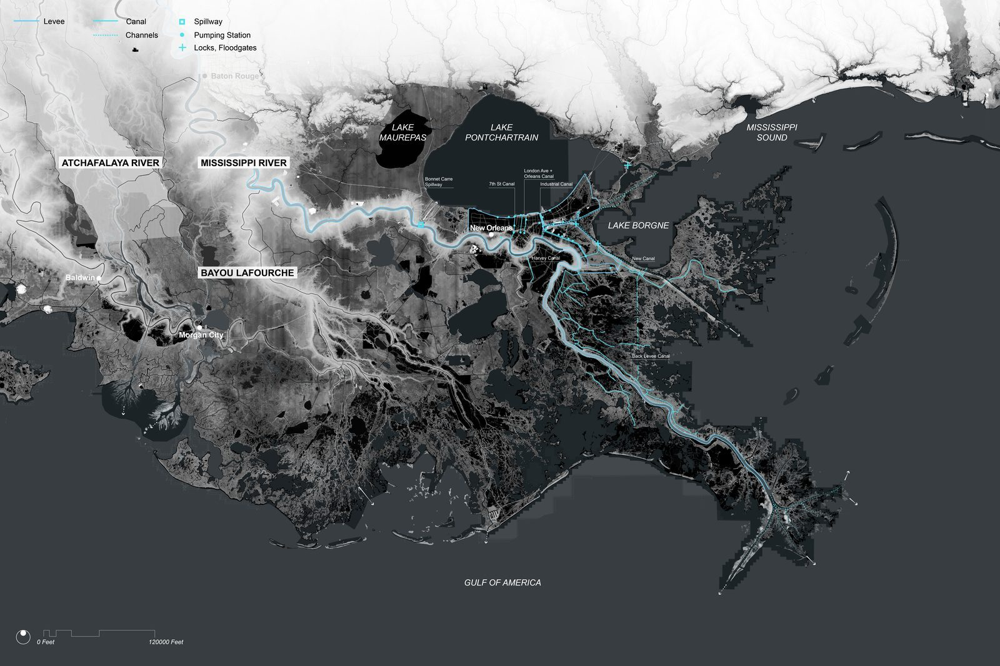
Figure 06_09Map of Mississippi River Delta | Bradley Cantrell, Madhura Vaze
Nicholas de Monchaux traces the trajectory that the MRBM exemplifies
(de Monchaux 2025). From the Panama Canal lockhouse, where synchronized
motors linked a physical model to the landscape it controlled and the
model was adjacent to the territory, visible from the same vantage, to
naval fire-control systems that moved the model into the ship’s
bulkheads, to the SAGE air defense network that relocated simulation
into windowless bunkers, to contemporary algorithms that operate
entirely within enclosed computational architectures, de Monchaux
identifies a persistent pattern. The more powerful a model becomes in
shaping reality, the more closed to view it becomes. The MRBM sits
squarely within this trajectory, a model that claimed to represent the
Mississippi while systematically enclosing it in concrete channels that
foreclosed what the river could reveal. The geomorphology tables
developed at REAL and UVA deliberately reverse this movement. The model
is physically present, materially engaged, open to surprise. Its sensing
apparatus makes the territory’s computation legible rather than
replacing it with a digital surrogate. Where de Monchaux’s trajectory
moves the model inward, away from the landscape it shapes, this practice
moves it back out, into material engagement with the processes it claims
to represent, where the territory can exceed the model’s assumptions and
that excess becomes the finding.
My entry into this modeling lineage occurred inside the MRBM’s own
territory. As a faculty member at LSU’s Robert Reich School of Landscape
Architecture from 2005 to 2014, I worked within the Mississippi River
basin that the MRBM had been built to manage, the same river system, the
same coastal dynamics, the same institutional landscape of the Corps of
Engineers, levee boards, and sediment budgets. Louisiana’s accelerating
coastal land loss is the contemporary expression of the MRBM’s epistemic
limitations, the model that made the basin legible as a single
controllable system also foreclosed the ecological complexity, the
wetlands, the seasonal floodplain forests, the sediment-dependent
marshes, on which the coast’s survival depended. I did not discover the
MRBM’s cautionary tale from a library. I discovered it from standing in
coastal Louisiana and watching the consequences of a modeling culture
that had recoded living landscapes as roughness coefficients.
The geomorphology modeling research conducted at the Responsive
Environments and Artifacts Lab at the Harvard Graduate School of Design
(2014–17) and subsequently at the University of Virginia (2017–present)
positions itself within, and deliberately against, this modeling
genealogy. The EmRiver geomorphology table deployed at both institutions
shares a material logic with the MRBM, water moves over synthetic
terrain, sediment self-organizes according to flow velocity, and the
behavior of the model is observed, measured, and used to inform
territorial propositions. But the epistemological commitment is
inverted.
Embedding GIS data directly into the design model turned the model
from a static picture into a structured database that can be queried and
simulated. The territory therefore becomes an instrument of inquiry
rather than a record of fact. Changing the database produces different
hypotheses about how the landscape will behave, and the landscape’s
response to construction refines those hypotheses in turn. The model is
not confirming a prediction. It is generating the terms of a
conversation with the site.
Where the MRBM sought Froude scaling and Reynolds number
correspondence, precise mathematical relationships establishing that
behavior in the model predicts behavior in the river, the geomorphology
table work deliberately abandoned this convention. The table was not a
scaled replica of any particular landscape. The presumed scale was
illustrative and diagrammatic rather than establishing linear or
proportionate relationships with real-world conditions. The table was
conceived as its own environment, with its own elements of novelty and
surprise, a generative space rather than a prediction engine.
This reframing had direct methodological consequences. Rather than
using the model to predict outcomes in specific sites, the table was
used to discover principles of interaction between flow, sediment, and
designed intervention. When Kinect depth cameras failed to resolve thin
depositional layers in the Sedimachine precursor experiments at
LSU (2012), the failure was not treated as an equipment problem but as a
research direction, directing subsequent development toward ultrasonic
range finders and image analysis capable of capturing phenomena at
different resolutions. When the robotic sediment gates at REAL
choreographed deposition through temporal sequences of opening and
closing rather than fixed channel geometry, the discovery was not a
technique for replicating that choreography in a real river but a
principle, that landscape form can be approached as the outcome of
designed operations rather than the specification of a fixed end state.
This is the lesson the MRBM’s concrete Mississippi could not teach,
because its architecture required the river to conform to the model,
rather than the model to remain open to being surprised by what the
river does.
I selected plexiglass because its smooth, transparent surface lets
the territory reveal its own flow dynamics from above and below, and its
low friction isolates the phenomena I seek to know. Wood would have
absorbed moisture, an opaque panel would have hidden the process, and a
rough surface would have mixed flow with texture. The material choice
enacts a methodological commitment. A simple, controlled system makes
visible the relationship between flow conditions and deposition that a
more complex apparatus would have obscured. The plexiglass becomes the
territory’s skin, recording its own behavior, and where patterns diverge
from expectations, the divergence is information, not error.
Sedimachine preceded the theoretical vocabulary that later
named its objects as flow-modifiers. The prototype existed before the
discipline had language for what it was doing, a material proposition
that reshaped how territorial agency could be conceived, visible in the
work years before it was visible in the writing.
The Seine: Long
Anthropogenic Histories
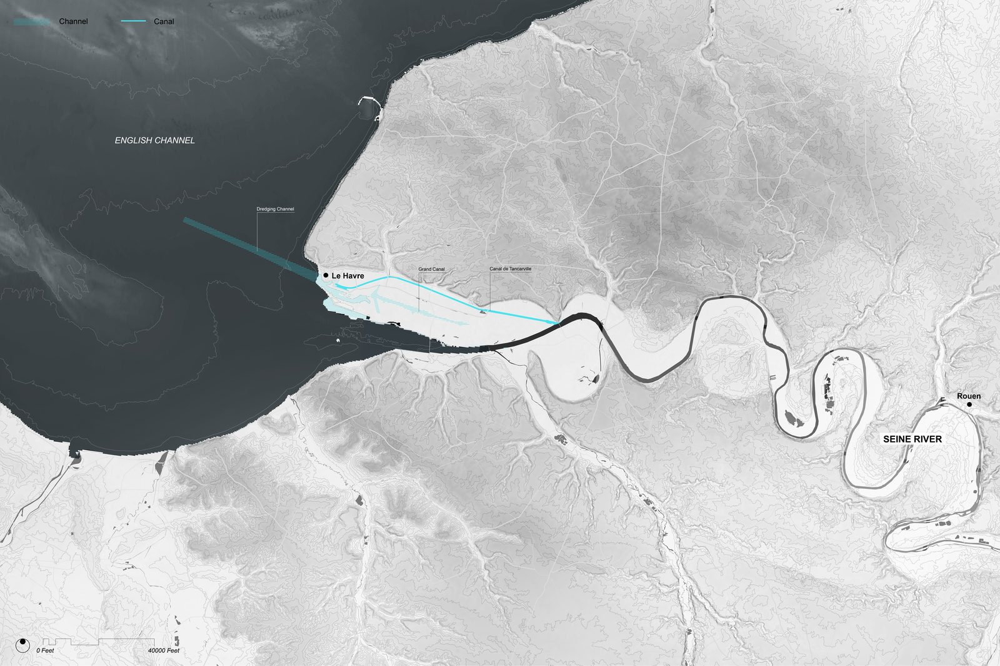
Figure 06_10Map of Seine River Delta | Bradley Cantrell, Madhura Vaze
Compared to the Mississippi, the Seine’s modeling history is deeply
entangled with slow, cumulative anthropogenic modification. Over at
least a millennium, the basin has been progressively engineered through
ponds, mills, diversion channels, navigation works, and storage
reservoirs, largely in service of provisioning and protecting Paris
(Lestel 2020; Seine Wikipedia 2025). Locks installed in the nineteenth
century deepened the urban reach and transformed shallow sandy banks
into a controlled navigation channel (Britannica 2025). Flood control
reservoirs on the Yonne, Marne, Aube, and upper Seine, built from the
mid-nineteenth century onward, added another layer of hydraulic
regulation (Seine Wikipedia 2025).
This long pre-modeling history, now being reconstructed via efforts
such as the ArchiSeine historical GIS, provides a unique testbed for
model validation, numerical reconstructions must grapple with legacy
structures, altered sediments, and incremental changes in channel
geometry over centuries (Lestel 2020).
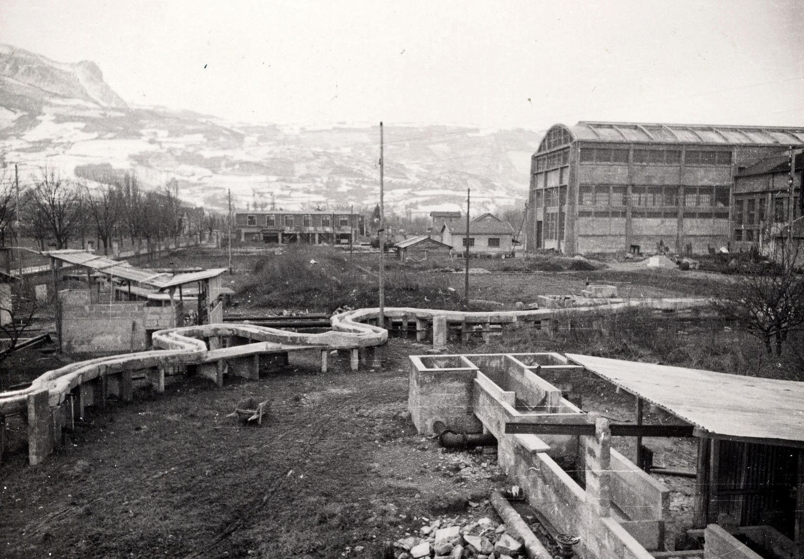
Figure 06_11Model of Isère at the Neyrpic workshops | Neyrpic
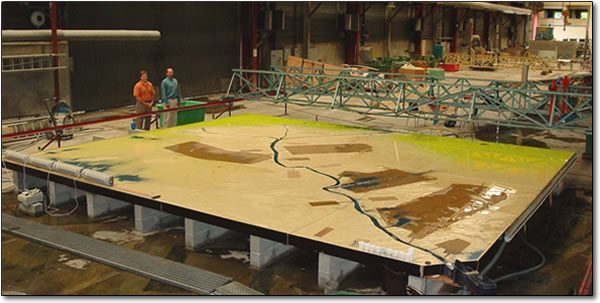
Figure 06_12Model at Sogreah’s Laboratory at Beauvert | Sogreah
Institutionally, the Seine became a key site for EDF’s Laboratoire
National d’Hydraulique at Chatou. LNH, and later the joint Laboratoire
d’Hydraulique Saint-Venant, not only constructed physical models but
developed the TELEMAC system, a suite of hydrodynamic and water-quality
codes including TELEMAC-2D for shallow water flows and SUBIEF for
reactive transport (WIT Press 1996; Saint-Venant Lab 2025). TELEMAC was
applied to model heavy metal transport along the Seine, coupling flow
dynamics with contaminant fate under complex urban loading (WIT Press
1996).
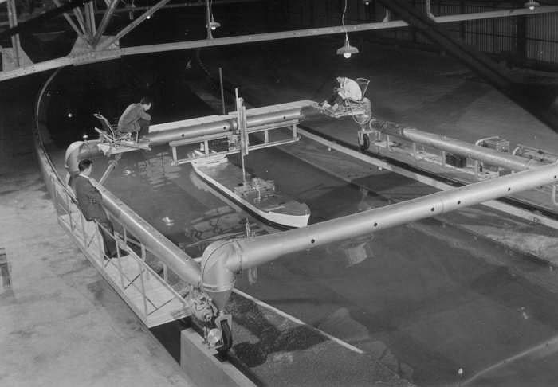
Figure 06_13Pembroke in the Suez Canal Model | Sogreah
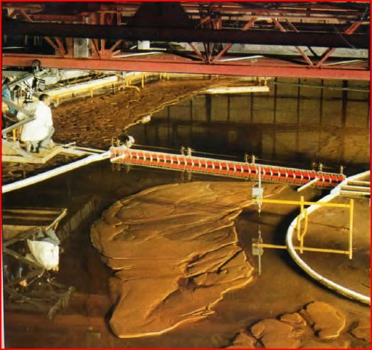
Figure 06_14A model at the Sogréah laboratory in Beauvert | Pierre Danel
In parallel, researchers began to deploy both simplified 1D and
detailed 3D hydro-sedimentary models to understand sediment resuspension
from ship wakes and navigation in the lower Seine, using
Navier-Stokes-based solvers and field validation (Seine Ship Wake Study
2010). Most recently, deep learning architectures-GRU, BiLSTM, and
hybrid CNN-BiLSTM-Attention networks-have been used to reconstruct
historical time series of electrical conductivity, dissolved oxygen, and
turbidity from limited monitoring data in the lower Seine (Janbain et
al. 2023). These models target not only ecological objectives but highly
publicized goals such as making the river swimmable for the 2024
Olympics (Seine Wikipedia 2025; Planetizen 2025).
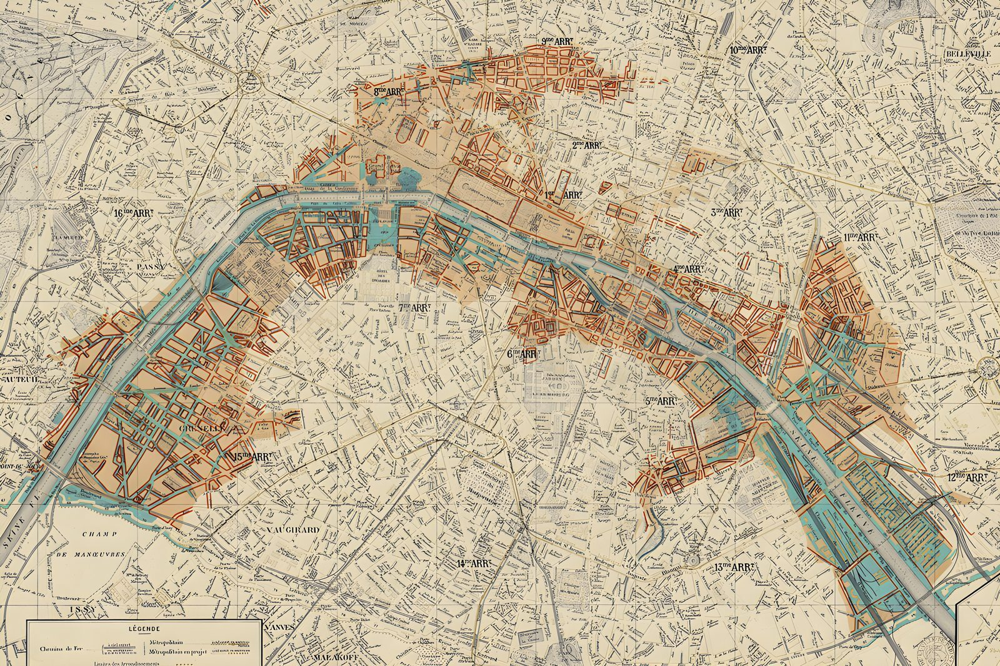
Figure 06_151910, Flooded Area within underground sewer systems in Paris | APUR and archives de Paris
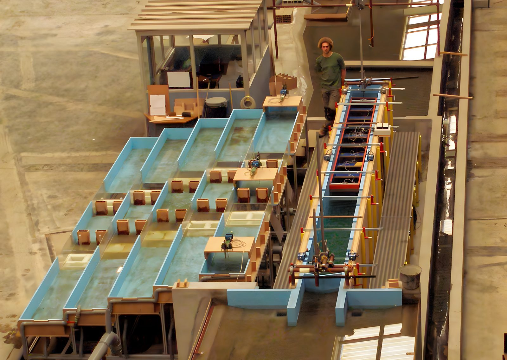
Figure 06_16Model of a lock on the Seine | Compagnie Nationale du Rhône
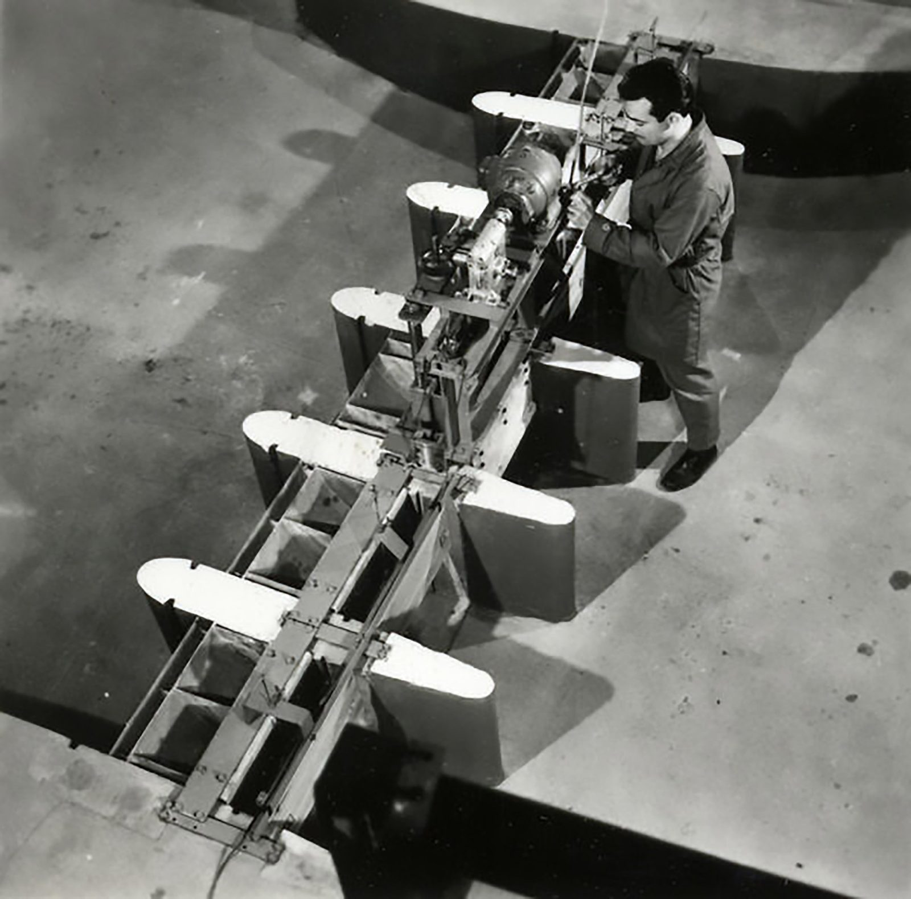
Figure 06_17Prototype of the Valves of the Rance tidal power plant | Sogreah
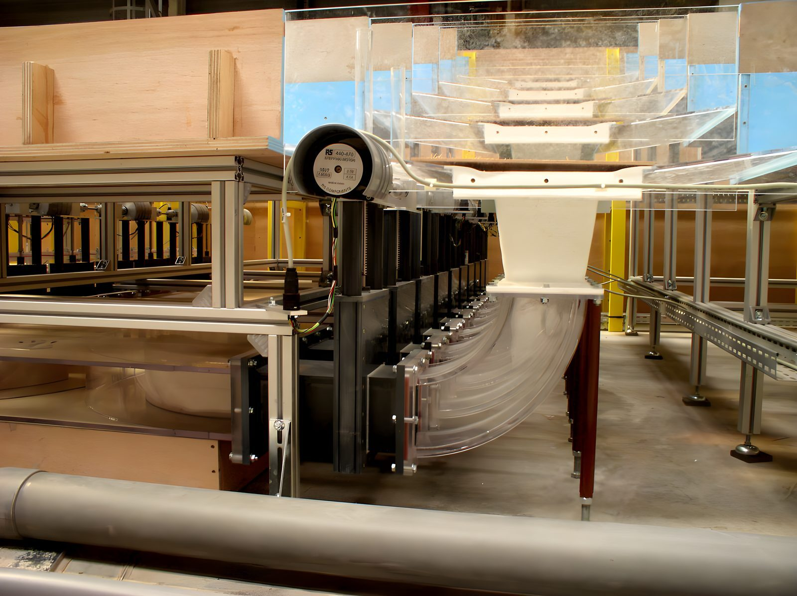
Figure 06_18Scale model of the Seine Nord Canal | Compagnie Nationale du Rhône
Thus, the Seine’s modeling history moves from long-term, largely
unmodeled engineering to physicochemical simulations anchored in
environmental regulation and public health, a shift from navigation and
flood control to water quality as primary modeling drivers.
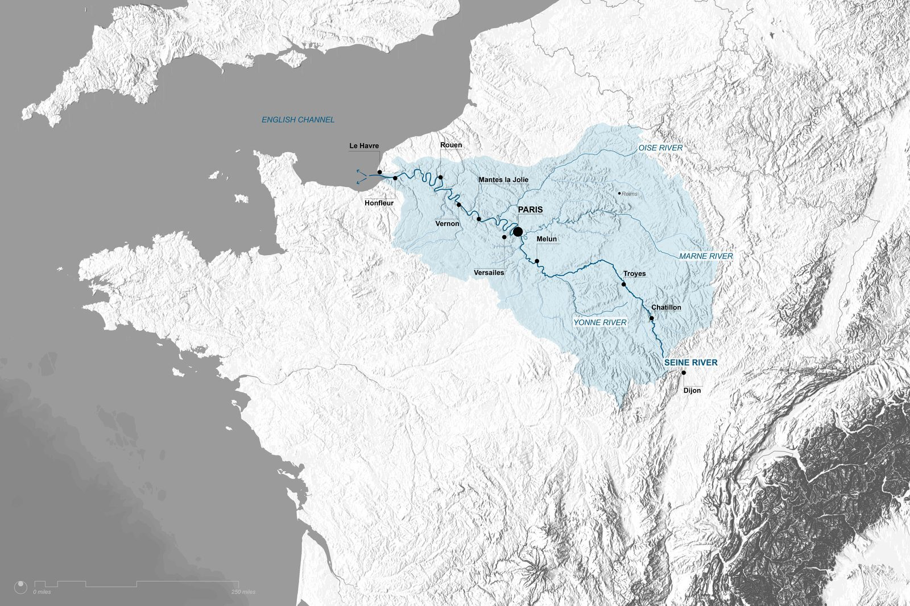
Figure 06_19Map of Seine River Watershed | Bradley Cantrell, Madhura Vaze
The Rhine: Hybrid Modeling
Cultures
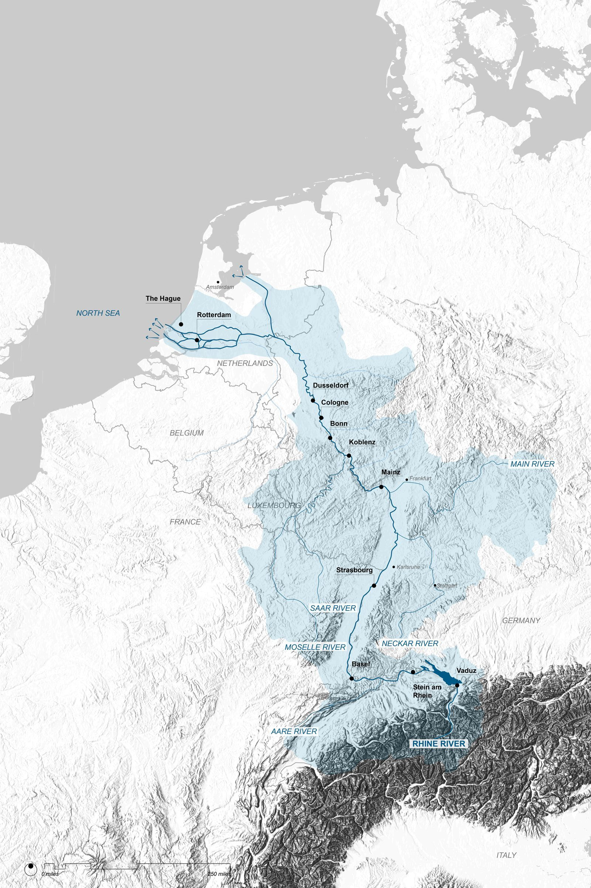
Figure 06_20Map of Rhine River Watershed | Bradley Cantrell, Madhura Vaze
The Rhine’s 15,000-year fluvial history is marked by shifting meander
generations and transitions from braided to meandering patterns,
overprinted by intensive human modification since at least the Neolithic
(Fluvial History Upper Rhine 2002). From circa 1100 CE onward,
deforestation, channel engineering, land reclamation, and later
industrialization drastically simplified and confined the channel and
eliminated an estimated 85 percent of historical floodplain area
(Fluvial Anthroposphere 2025; Wetlands International 2025; Harvard
Magazine 2006). The river has accordingly become emblematic of the
“fluvial anthroposphere,” where human activities function as primary
geomorphic agents (Fluvial Anthroposphere 2025).
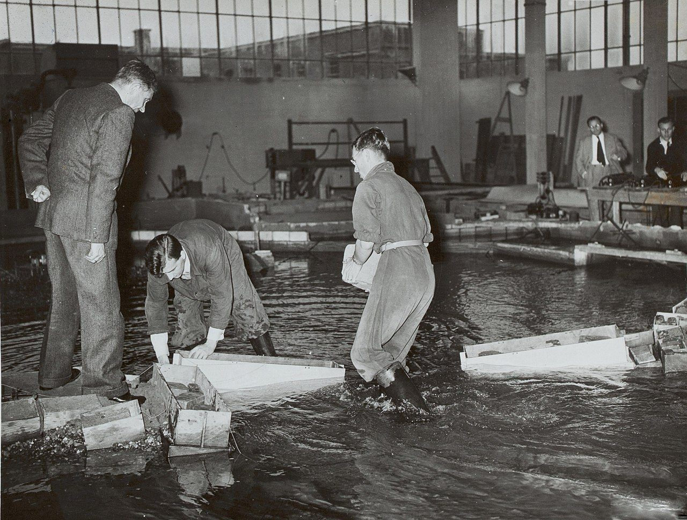
Figure 06_21Thijsse in the Hydraulics Research Laboratory in Delft | Waterloopkundig Laboratorium
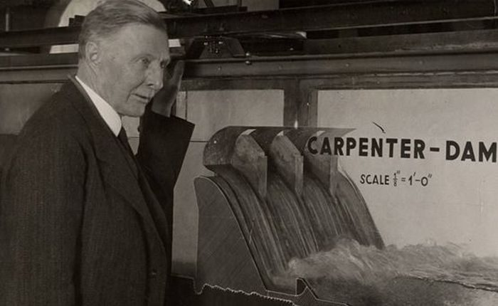
Figure 06_221899-1901 Theodor Rehbock was appointed Professor of Hydraulic Engineering at the Technical University of Karlsruhe | Karlsruhe Institute of Technology
Modeling efforts on the Rhine reflect this complexity and its status
as an international waterway. Sogreah’s CARIMA code provided the
foundation for the Hydrodynamic, Numerical Model of the River Rhine
(HN-Model Rhine), which covered a 500km reach from Iffezheim to Lobith
and was calibrated against major flood events to support flood
management and regulation (Cunge 2002; WIT Press 2002). At the same
time, Delft Hydraulics (now Deltares) developed morphological models
such as DVR and later 6th-generation tools within the D-HYDRO Suite,
used to assess fairway maintenance, sediment extraction, and the impacts
of large-scale interventions like the Dutch “Room for the River” program
(Deltares 2012; Deltares 2015).
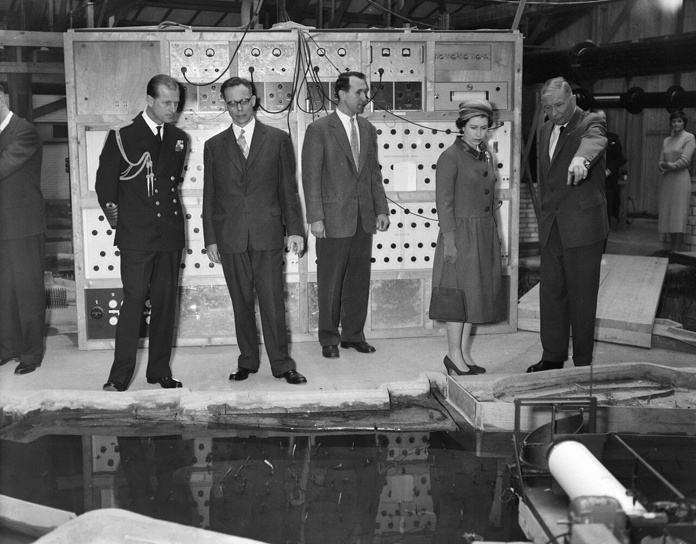
Figure 06_23Thijsse during the visit of Elizabeth II and Prince Philip, Duke of Edinburgh to the Hydraulics Laboratory | Waterloopkundig Laboratorium
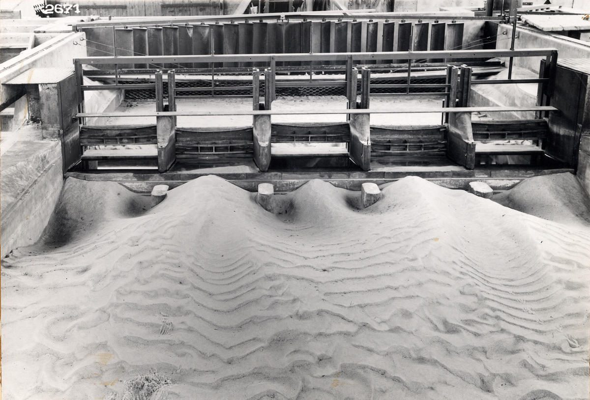
Figure 06_24Scale model of the scour at the foot of the Jons dam | Sogreah
On the physical side, the Bundesanstalt für Wasserbau (BAW) in
Germany constructed a 1:60 mobile-bed model of the “Jungferngrund”
gravel bank near Oberwesel to study regulation measures and sediment
transport in a complex, partially rock-bounded reach (BAW 2025). The
Jungferngrund model is explicitly embedded in a hybrid workflow where 3D
numerical models are used for hydraulic pre-design and the physical
model for testing morphological responses (BAW 2025). Complementary 1:40
models of induced bank erosion for sediment supply to the Old Rhine,
developed collaboratively by Compagnie Nationale du Rhône, Deltares, and
BOKU University, demonstrate similar hybrid strategies (Mosselman et
al. 2014).
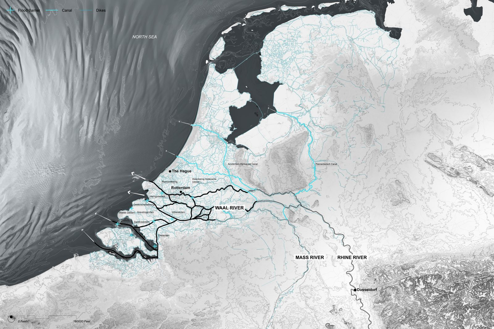
Figure 06_25Map of Rhine River Delta | Bradley Cantrell, Madhura Vaze
Other work couples remote sensing (e.g. SAR imagery) with numerical
models to simulate the Rhine plume in the North Sea, again underlining
the way in which the river is embedded in a larger coastal system
(AMETSOC 2001). Taken together, these efforts exemplify a mature
modeling culture where 1D-2D numerical models, reach-scale CFD, physical
models, and satellite data are woven together to manage a highly
engineered but still dynamic international river.
Institutions as Modeling
Ecologies
Across these rivers, a set of institutions repeatedly appear as
crucibles for modeling innovation.
Sogreah/Artelia began as the hydraulic laboratory of Neyret-Beylier
in Grenoble, rooted in turbine testing and hydropower design, and
evolved into an independent consultancy in 1955 (SOGREAH History 2010;
Artelia Laboratory 2025). Its early acquisition of an IBM 650 in the
1950s enabled engineers like Jean Cunge to become pioneers in
computational hydraulics and systems thinking, producing models such as
CHAR2 (1D sediment transport), CARIMA (hydrodynamics), and one of the
earliest computational Mekong Delta models (Cunge 2010). Simultaneously,
Sogreah developed distinctive physical modeling infrastructures such as
the Port Revel ship handling lake and riverine models like the lower
Mississippi Delta project (Port Revel 2025; Ardurra 2025).
The Hydrologic Engineering Center (HEC), embedded within the U.S.
Army Corps’ Institute for Water Resources, pursued a different logic,
the creation of standardized, publicly available software for federal
and consultant use (HEC 2025). HEC-1 and HEC-HMS codified flood
hydrograph methods, HEC-6 and later sediment and systems models provided
widely adopted tools for scour, reservoir sedimentation, and linked
reservoir-river systems (HEC-HMS 2025; HEC Model Classification 2025).
HEC’s position inside a large federal agency shaped its emphasis on
robustness, documentation, and regulatory applicability (e.g. FEMA
floodway determinations).
Delft Hydraulics/Deltares grew from a national imperative-the
Netherlands’ struggle against the sea and its rivers-and thus built
capacity across the full spectrum of physical and numerical modeling for
coasts, estuaries, and rivers (Waterloopkundig Laboratorium 2025;
Deltares 2012). The outdoor de Voorst facility exemplified large-scale
physical experimentation, while later morphodynamic and hydrodynamic
codes extended that expertise into software platforms now used
worldwide.
LNH Chatou and the Laboratoire d’Hydraulique Saint-Venant sit at the
intersection of energy infrastructure and environmental hydraulics.
Their TELEMAC system and associated research have been deeply shaped by
EDF’s concerns with plant cooling, dam safety, and riverine water
quality, with the Seine serving as both a testing ground and a
public-facing case study (EDF Lab Chatou 2022; Saint-Venant Lab 2025;
WIT Press 1996).
University laboratories-Toulouse’s IMFT, Grenoble groups, Colorado
State, Utah State’s UWRL, Cardiff, among others-have meanwhile blended
physical modeling, numerical method development, and basic research on
river processes and landscape evolution (IMFT 2025; CSU Hydraulics 2025;
UWRL 2025; Cardiff Meandering Study 2010; Tucker and Hancock 2010;
Coulthard et al. 2002). Their work often pushes the theoretical and
computational frontier-e.g., landscape evolution models or AI-based
flood prediction-before those approaches diffuse into agency and
consultancy practice (Modeling River History 2010; AI Urban Floods 2022;
Janbain et al. 2023).
The design research laboratory within a professional school of
landscape architecture occupies a distinct position within this
institutional landscape. Neither a commercial consultancy producing
transferable tools nor a federal agency standardizing methods for
regulatory compliance nor a national laboratory stewarding critical
water infrastructure, the UVA Geomorphology Lab, and before it, REAL at
the Harvard GSD, uses physical modeling for purposes that none of the
institutional genealogies above fully anticipated, the generation of
design heuristics through material encounter with dynamic systems, what
Bélanger (2015) calls “going live,” the shift from designing
representations of landscapes to designing landscapes as living systems
operating in real time.
The geomorphology table computes simultaneously in sediment-water
dynamics and in digital sensing. The territory itself solves hydraulic
problems. Water finds its path, sediment sorts by grain size, channels
form and migrate. The sensors make that computation legible. The table
is a material computer in the sense Lootsma named at PRS 5. The
computing is already in there, in the physics of flow and deposition.
What the digital sensing layer adds is not computation but readability,
a way of attending to what the material has already worked out.
The REAL table is a synthetic site with its own material properties,
not a scaled replica of the Mississippi River. It does not need to
validate a real-world analogue to produce knowledge. It is a discovery
engine, a system whose value lies in revealing principles of interaction
between flow, sediment, and designed intervention that transfer across
scales without requiring precise scalar correspondence. The table’s
autonomous behavior, its capacity to surprise, is not a limitation of
the apparatus. It is the point.
But if the model is a discovery engine whose value lies in producing
outcomes that cannot be fully anticipated, then conventional
documentation fails. A photograph captures a state. A report summarizes
findings against predetermined criteria. Neither format is adequate to a
system whose knowledge is produced through ongoing transformation.
Indeterminate Futures (2021), developed with Xun Liu for the
Venice Architecture Biennale, addressed this problem directly. Years of
geomorphology table experiments were minted incrementally as NFTs on the
Tezos blockchain, each 15 to 30 second increment a unique digital
object, the archive growing throughout the Biennale as new experiments
were conducted. The catalog of the exhibition was also the exhibition
itself. The accumulation was the argument, that certain kinds of
knowledge cannot be captured in a definitive representation but must be
held in an archive that grows as the research produces more material and
remains accessible as the questions the archive might answer evolve.
This is what adaptive epistemology resembles at the scale of a research
archive. Knowledge produced through ongoing action, accumulated
incrementally, held in a form that does not foreclose future use by
constraining the material to the interpretive frameworks available at
the time of production.
The laboratory’s graphic language follows from this logic.
Gradient-based plans communicate probability, tendency, and flux rather
than fixed elevations, allowing the territory to be read as an ongoing
process rather than a state to be achieved.
The years I spent working alongside civil engineer Clint Wilson at
the LSU Coastal Sustainability Studio illustrate it precisely. Wilson
and I never worked on the same models directly, but we were developing
physical models in parallel within our respective disciplines, his in
civil engineering, mine in landscape architecture, and engaged in
ongoing conversations throughout those developments. Wilson, trained in
the tradition that produced WES and HEC, built models to extract
predictive patterns, scaling laws, transport rates, calibration data
that could be validated against field measurements and applied to
specific sites. I built models to discover emergent landforms, channel
morphologies, depositional patterns, spatial relationships between flow
and form that suggested how design might operate within systems that
exceed prediction. We shared a material practice and a river system.
What differed was what counted as knowledge. The divergence was not a
miscommunication between disciplines. It was how different institutions,
with different accountability structures, different definitions of
rigor, and different relationships to the landscapes they study, produce
different knowledge from parallel material engagement.
The BAW’s Jungferngrund model on the Rhine operates within a hybrid
workflow, 3D numerical models for hydraulic pre-design, physical models
for testing morphological responses, that is structurally parallel to
the UVA Lab’s methodology, where computational analysis informs the
parameters of physical experimentation and physical results redirect
computational inquiry. The difference is purpose, BAW’s hybrid workflow
serves navigational safety and sediment management on an engineered
international waterway, the design research laboratory’s hybrid workflow
serves the discovery of principles for how landscapes might be designed
to accommodate, rather than resist, the dynamic behavior that the
physical model reveals.
From Concrete to Code
The move from physical models to numerical computation is underpinned
by the equations for open channel flow and sediment transport. The
St. Venant equations (1871) provide 1D mass and momentum conservation
for unsteady flow, their 2D depth-averaged counterparts, the shallow
water equations, and full Navier-Stokes/RANS formulations underpin 2D
and 3D CFD models (EOLSS 2002; Shallow Water Equations 2025). Early
numerical models typically employed simplified forms such as kinematic
or diffusion waves to remain tractable on limited hardware (EOLSS 2002).
As computational power grew, more complete formulations became
feasible.
1D models such as HEC-1, HEC-HMS, and HEC-6 remain indispensable for
long-reach, long-duration simulations where computational efficiency is
critical (HEC-HMS 2025; HEC 1D vs 2D 2019). The rise of airborne LiDAR
and high-resolution DEMs enabled 2D flood models to flourish, providing
detailed inundation mapping and better representation of complex
overbank flows in both urban and rural floodplains (CDEMA 2025; Simon
2019). 3D CFD models, though computationally expensive, are now
routinely used for reach-scale studies of meander bends, groyne fields,
and local scour, often coupled to laboratory experiments for validation
(Cardiff Meandering Study 2010; Lek Bottom Vanes 2024).
Landscape evolution models (LEMs) such as CHILD, CAESAR, and SIBERIA
represent a further abstraction, they simulate coupled channel-hillslope
systems over millennial timescales, integrating tectonics, climate
forcing, and multiple grain-size sediment transport into a unified
framework (Modeling River History 2010). They rely on efficient flow
routing schemes, irregular meshes or high-resolution grids, and
parameterizations of erosion, deposition, and vegetation effects (Tucker
and Hancock 2010; Coulthard et al. 2002).
More recently, AI and machine learning techniques have been adopted
both as stand-alone predictive tools and as components of hybrid
modeling workflows. Logistic regression, decision trees, SVMs, K-nearest
neighbors, and deep neural networks have been deployed to quantify urban
fluvial flood susceptibility in catchments such as Darby Creek,
Pennsylvania, while deep recurrent architectures have been used to
reconstruct water quality time series in the Seine (AI Urban Floods
2022; Janbain et al. 2023). These approaches often treat the river as a
high-dimensional input-output system, learning patterns from data rather
than explicitly encoding physical processes, but can be embedded within
physics-informed or hybrid frameworks.
Across these developments, physical models have not disappeared.
Instead, they have been repositioned as high-resolution experimental
platforms used to test specific interventions, probe fundamental
processes, and generate data for numerical model calibration and
validation (UWRL 2025; BAW 2025). Composite or hybrid modeling
strategies-such as BAW’s combined CFD and Jungferngrund physical
model-suggest a future where modeling ecologies deliberately mix
concrete, code, and data (BAW 2025; UWRL 2025).
Looking
Forward in Fluvial Modeling (and for Design)
Looking across the Seine, Mississippi, and Rhine, a consistent
pattern emerges. Modeling capacity develops in response to crisis. The
MRBM arose from the 1927 flood, Dutch modeling from the existential
threat of the North Sea, the Seine’s turn to AI-driven water quality
reconstruction from regulatory targets and the public spectacle of
Olympic swimming, the Rhine’s hybrid workflows from the need to
reconcile navigation with restoration after centuries of channelization
(ASCE 2025; Waterloopkundig Laboratorium 2025; Janbain et al. 2023;
Deltares 2012). But the modeling cultures that crisis produces are
shaped by the institutions that house them. Commercial firms like
Sogreah emphasize transferable tools, federal centers like HEC
prioritize standardization for regulatory compliance, national
laboratories like Deltares steward critical water infrastructure, and
universities push theoretical frontiers. Each institution produces not
just different models but different epistemologies, different
definitions of what counts as valid knowledge about a river.
What all of them share is that models encode the histories of
intervention that preceded them. The Seine’s terraces, ponds, and weirs,
the Mississippi’s levee systems, the Rhine’s shortened channels and lost
wetlands are not merely boundary conditions. They are the cumulative
outputs of earlier unmodeled design decisions that contemporary models
must now digest (Lestel 2020; Harvard Magazine 2006; Fluvial
Anthroposphere 2025). And across all three rivers, the central challenge
is not model skill but the communication of uncertainty, how limitation,
scale, and indeterminacy are represented to the engineers, policymakers,
and communities whose decisions the models inform.
For design practice, this history offers a lesson that the modeling
genealogy makes available but does not itself draw. The appropriate
response to the MRBM’s failure mode, the river expected to conform to
its concrete counterpart, is not a better model but a different
epistemological relationship between model and territory.
The Sedimachine (2012), REAL (2014–17), and the UVA
Geomorphology Lab (2017–present) each operate within this reframing.
They inherit the physical modeling tradition, water over synthetic
terrain, sediment self-organizing under flow, while departing from its
representational claims. The table is not a scaled replica of any real
river. It is a designed environment for encountering principles of
sediment choreography that cannot be fully specified in advance. When
the robotic sediment gates develop temporal sequences of opening and
closing that produce deposition patterns no pre-programmed rule could
specify, the discovery is not a replication protocol for a real river
but a principle for how design might operate within systems that exceed
prediction.
The NEOM consultation (2022–25) translates this principle to
territorial scale. When GeoHECRAS hydrological modeling revealed that
conventional channelization of the wadis surrounding The Line would
require widths exceeding 200 meters with hardened concrete at velocities
making ecological function impossible, the finding was a proof of
concept. The alternative, routing water through reconceived wadi systems
as holding areas, recharging aquifers, sustaining coastal brackish zones
through fluctuating isohaline gradients, was an engineering necessity,
not a design preference. The territory’s own hydrological dynamics made
the adaptive proposition unavoidable. This is what the design research
laboratory’s modeling methodology is built toward, not the prediction of
outcomes but the discovery of conditions under which the landscape’s own
dynamic intelligence becomes a design resource rather than a variable to
be controlled.
For this dissertation, the history traced above is not background. It
is genealogy. The geomorphology modeling research conducted at LSU, the
Harvard GSD, and the University of Virginia descends directly from the
modeling cultures established at WES, Delft, Sogreah, and Chatou,
sharing their material logic (water over synthetic terrain, sediment
self-organizing under flow), their institutional form (a laboratory
within a larger institutional ecology), and their relationship to crisis
(Louisiana’s coastal land loss is the contemporary Mississippi’s 1927
flood). What departs is the epistemological commitment, from prediction
to discovery, from similitude to generativity, from the model that
contains the river to the model that is designed to be exceeded by
it.
Cheramie’s observation that the MRBM made it possible to comprehend
“the entire drainage basin all at once”, synoptic comprehension as a new
form of power, is also the argument that Chapter 01 develops in relation
to adaptive epistemology, that the capacity to see the whole system
simultaneously is both an epistemic achievement and an epistemic
closure, foreclosing the local, the contingent, and the ecologically
particular. The modeling genealogy traced here is the empirical
foundation for that argument, and for Chapter 02’s claim that the
stationarity assumptions embedded in predict-and-control modeling have
been exceeded by the systems they were built to manage.
The Seine, the Mississippi, and the Rhine are co-produced landscapes
in which physical and numerical models have become infrastructural
actors in their own right. Future assemblages of wetware, sensors,
algorithms, physical models, and human expertise, the “internet of
ecologies” proposed for the NEOM consultation, the distributed NFT
archive of geomorphology table documentation in Indeterminate
Futures, the machine learning integration of the UVA lab’s autonomy
gradient, are the next nodes in the modeling genealogy this chapter
traces. Understanding that genealogy clarifies what is being inherited,
what is being departed from, and what it means to design for systems
that are, by definition, smarter than the models we build to understand
them.
If the model is a site … an environment with its own dynamics that
can be designed, observed, and learned from … then what is the
relationship between the model and the territory? The model is not the
landscape. But it is not a representation of the landscape either. What
kind of knowing does this hybrid condition enable? Can the landscape
itself become a model and can the territory function as its own
instrument of inquiry?
These questions are not rhetorical. But before the landscape can
become a model, the landscape must first become legible, and legibility
is never neutral. The MRBM’s failure was not only that it sought control
rather than discovery. It was that its sensing apparatus, the concrete
channels, the fixed gauges, the human observers at watchtowers, had
already decided what the river could reveal before the model ran. The
instruments encoded the epistemology. What was not measured could not
matter, and what could not matter could not be designed for. The
wetlands recoded as roughness coefficients were not invisible through
negligence but through an apparatus that had been built to see something
else.
To design models that generate rather than foreclose is also to
design the instruments through which territories become known. The
choice of what to sense, where to place the sensor, what data structures
to build, what phenomena to count as information, these are design
decisions of the first order, not technical defaults. They determine not
only what the model can see but what the territory can reveal. Chapter 7
examines the politics of that apparatus, the Technogeographies of
Sensing through which the knowing of landscapes is structured before any
model runs, and the neo-wild landscapes that emerge in the gaps of what
has not been instrumented.